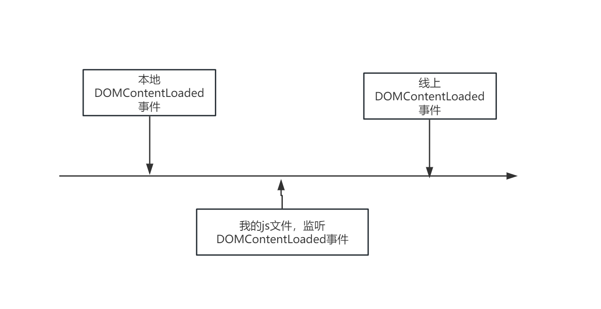

不是专业的，轻点喷，希望大佬不吝赐教。
第一次遇到不同环境运行导致的运行差异。
事情的起因是这样的，今天下午给自己的使用vitepress搭建的博客添加了鼠标样式并且成功上线，但是在本地再次运行的时候发现鼠标样式没有了。
但是代码没有任何改动，打包之后preview也是正常的，上线也是正常的，本地环境跑了多次却不显示鼠标的样式。
然后我就开始了调试，首先确认了问题的存在：通过在代码中加入 console.log 语句调试后，我发现DOMContentLoaded事件在本地环境不触发，最后询问gpt之后确认是因为在本地环境中页面加载速度极快，DOMContentLoaded事件在 JavaScript 代码执行之前就已经触发，所以我写的事件监听自然就无效了。
为了确保 init 函数在所有环境中都能正确执行，引入了一个检查 document.readyState 的步骤。如果页面在脚本执行时已经完成加载（document.readyState 不是 "loading"），则直接调用 init 函数。这确保了无论 DOMContentLoaded 是否已经触发，初始化逻辑都能被执行。
通过简单的 document.readyState 检查，可以有效解决因页面加载速度差异导致的事件监听问题。这个技术不仅适用于 DOMContentLoaded 事件，也可以用于处理其他依赖于特定加载状态的脚本执行逻辑。
希望能够给大家一定的借鉴，如果有帮到你，希望可以给出免费的三连。

我直接执行就可以正常显示，那么添加事件监听是不是有点没必要
如果你发现在直接执行初始化函数时可以正常显示，并且没有遇到任何问题，那么在某些情况下确实可以省略添加事件监听器的步骤，尤其是当你的脚本确保只在全部元素都加载完成后才运行时。然而，这种方法是否适用，需要根据具体情况来判断。以下是一些考虑因素：
1. 页面内容依赖
如果你的 JavaScript 初始化函数依赖于 DOM 元素（比如你需要绑定事件到特定元素，或者修改 DOM 结构），直接执行可能会在 DOM 完全加载之前运行，从而导致错误。DOMContentLoaded 事件确保了所有的 HTML 都已经被完全加载和解析，但不包括样式表、图片和子框架。所以使用 DOMContentLoaded 监听器可以保证 DOM 完全可用。
2. 脚本放置位置
- 如果你的
<script> 标签位于 </body> 标签之前（页面底部），那么大多数情况下，当脚本执行时，DOM 已经解析完成，你可以直接调用初始化函数。
- 如果
<script> 标签位于 <head> 中或者在多个 DOM 元素之前，那么在没有监听 DOMContentLoaded 的情况下直接执行可能会因为 DOM 尚未加载完全而失败。
3. 执行时机的可控性
使用 DOMContentLoaded 监听器的好处是提供了一致的执行时机，确保所有的前置条件（DOM 加载和解析完成）都已满足。这种方法提高了代码的健壮性和可移植性，使其在不同环境和条件下表现一致。
4. 维护和可读性
即使在脚本执行时 DOM 总是可用的情况下省略 DOMContentLoaded，也可能会对未来的维护或其他开发者阅读你的代码造成困扰。他们可能不清楚为何省略了这一步，或者在将来修改页面结构后可能不了解将脚本移动到 <head> 中的影响。
结论
在大多数情况下，如果不确定或者你的脚本有可能被移动到不同的位置，最好是保留对 DOMContentLoaded 的监听，以确保代码的稳定性和可靠性。如果你确信脚本总是在所有相关的 DOM 元素加载之后执行（如放置在文档的最后），并且你愿意接受这种代码在未来可能需要调整的风险，那么直接执行也是可行的。这取决于你的项目需求、团队约定以及你对代码执行环境的控制程度。
我的引入js写在head里，获取body向里面插入内容是否会报错
如果你的 JavaScript 代码是在 <head> 部分引入，并且该代码尝试直接操作或向 <body> 元素添加内容，你可能会遇到问题，因为当脚本执行时，页面的 <body> 部分可能还未被浏览器解析和加载。这通常会导致脚本无法找到 <body> 元素或尝试操作的其他 DOM 元素，从而引发错误或导致脚本无效。
问题示例
假设你的 HTML 和 JavaScript 如下所示：
<!DOCTYPE html>
<html>
<head>
<title>Test Page</title>
<script src="script.js"></script>
</head>
<body>
<!-- 页面内容 -->
</body>
</html>
在 script.js 中，你可能有如下代码：
document.body.appendChild(document.createElement('div'));
在这种情况下，当 script.js 执行时，<body> 元素可能还没有被完全加载，因此 document.body 可能是 null，导致调用 appendChild 方法时抛出错误。
解决方案
为了确保你的脚本可以安全地访问和操作 <body> 或其它 DOM 元素，你可以采取以下几种常见的策略：
- 将脚本移动到
**<body>** 标签的底部：
这是最简单的解决方案，确保当脚本执行时，所有的 DOM 元素都已经加载完成。
<body>
<!-- 页面内容 -->
<script src="script.js"></script>
</body>
- 使用
**DOMContentLoaded** 事件：
如果你需要或更愿意将脚本保留在 <head> 中，可以通过监听 DOMContentLoaded 事件来确保 DOM 完全加载和解析完成后再运行你的脚本。
document.addEventListener('DOMContentLoaded', function() {
document.body.appendChild(document.createElement('div'));
});
- 异步加载 JavaScript：
将脚本标记为异步 (async) 或延迟 (defer)。这两种方法都能确保脚本在文档解析完成后再执行，但它们的具体行为略有不同：
- 使用
async：脚本会在它下载完成后尽快执行，但不会等待其他脚本或样式表，可能在 DOMContentLoaded 之前或之后。
- 使用
defer：脚本会在整个文档解析完成后、在 DOMContentLoaded 事件前执行。
<script src="script.js" defer></script>
结论
最保险的做法是使用 DOMContentLoaded 监听器或将脚本放置在 <body> 的末尾，这样可以保证在执行脚本时 DOM 完全可用。选择哪种方法取决于你的具体需求和页面加载性能的考量。